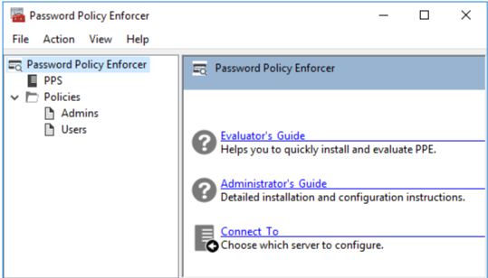
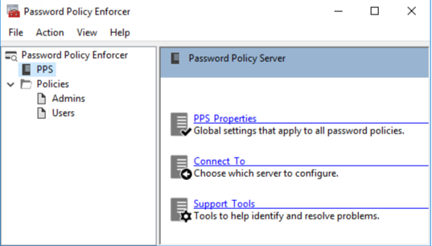
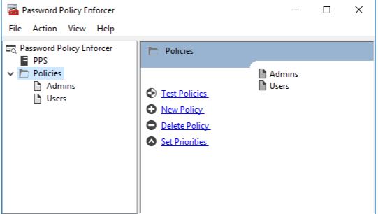
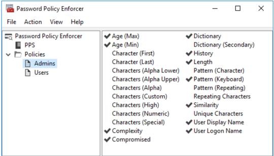

The PPE management console is a Microsoft Management Console snap-in that is used to edit PPE's configuration. The management console is installed by default when PPE is installed, but you can also install it on your computer if you want to remotely configure PPE.
Installing the Management Console
To install the PPE management console onto your computer so that you can remotely configure PPE:
- Start the PPE installer (PPE912.exe).
- Read the license agreement, and then click Yes if you accept all the license terms and conditions.
- Select the Advanced option, and then click Next.
- Double-click the PPE912.msi file.
- Click Next when the PPE Installation Wizard opens.
- Select I accept the license agreement, and then click Next.
- Select the Custom option, and then click Next.
- Click the icon beside the Password Policy Server feature, and then click Entire feature will be unavailable.
- Click Next twice.
- Wait for the management console to install, and then click Finish.
Opening the Management Console
Click Start > Password Policy Enforcer 9 > PPE Configuration to open the PPE management console. If you are opening the management console for the first time, then click Yes when asked if you would like to create a new PPE configuration.
The management console images in this document are taken from a computer running Windows Server 2016. Other Windows versions may display the management console slightly differently, however the management console is used identically on all Windows versions.
Press F1 while using the management console to display help information for the current window.
Management Console Views
The PPE management console has four views. Click an item in the left pane of the management console to select a view.
PPE View
Click Password Policy Enforcer in the left pane to display this view.

Use this view to:
- Read the PPE documentation.
- Connect to a configuration.
PPS View
Click PPS in the left pane to display this view
Use this view to:
- Edit PPS properties.
- Connect to a configuration.
- Display the Support Tools page.
Policies View
Click Policies in the left pane to display this view.
Use this view to:
- Edit policy properties.
- Test policies.
- Create and delete policies.
- Set policy priorities.
Rules View

Click a policy name in the left pane to display this view. Use this view to configure the rules for a policy.